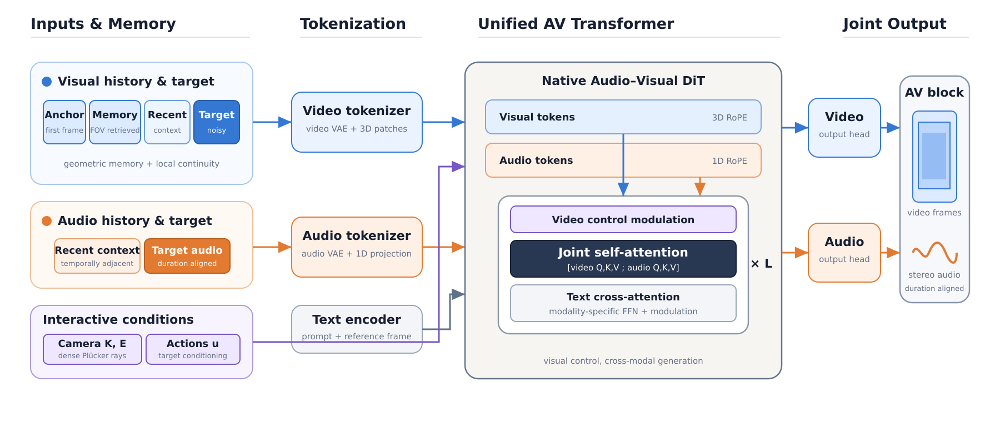

Interactive audio-visual world modeling
Vorch-WM Orchestrating Sight and Sound
for Interactive World Models
A unified world model that lets environments be both seen and heard.
Worlds should
sound alive.
Interactive world models can synthesize controllable visual observations, yet their generated worlds are predominantly silent.
We present Vorch-WM, an interactive audio-visual world model that natively co-generates duration-aligned video and stereo audio under camera and action control. A unified generative backbone models both modalities through joint self-attention, allowing visual events and environmental sounds to evolve together rather than attaching audio in post-processing.
Dense Plücker ray embeddings provide camera control, while discrete navigation actions enter token-wise temporal conditioning. For long-horizon rollout, Vorch-WM combines a persistent visual anchor, camera-field-of-view retrieval, recent visual context, and temporally aligned acoustic history. Shared training and inference windows, target-only denoising, and error-aware history perturbation stabilize autoregressive continuation.
One process.
Two senses.
Visual history is selected geometrically, while audio preserves temporal continuity. Both streams meet inside a native audio-visual Transformer.

See the world.
Hear it respond.
Coherent audiovisual world simulation across natural, architectural, fantasy, and science-fiction environments. Turn on sound for the full experience.